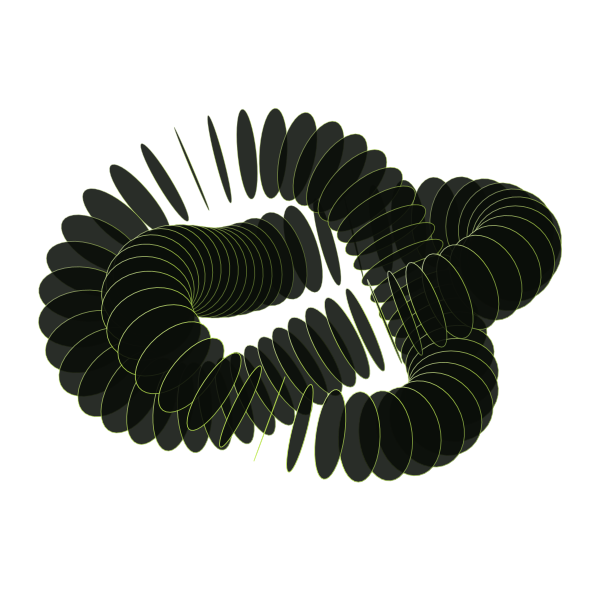
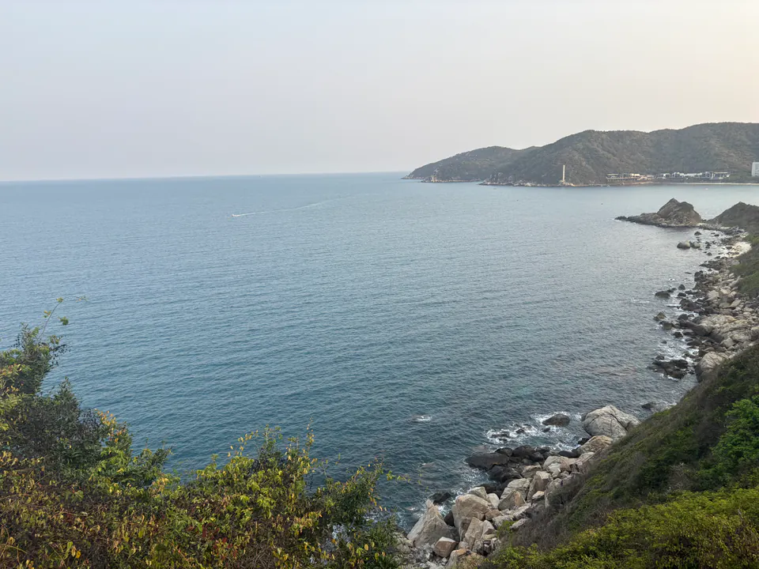
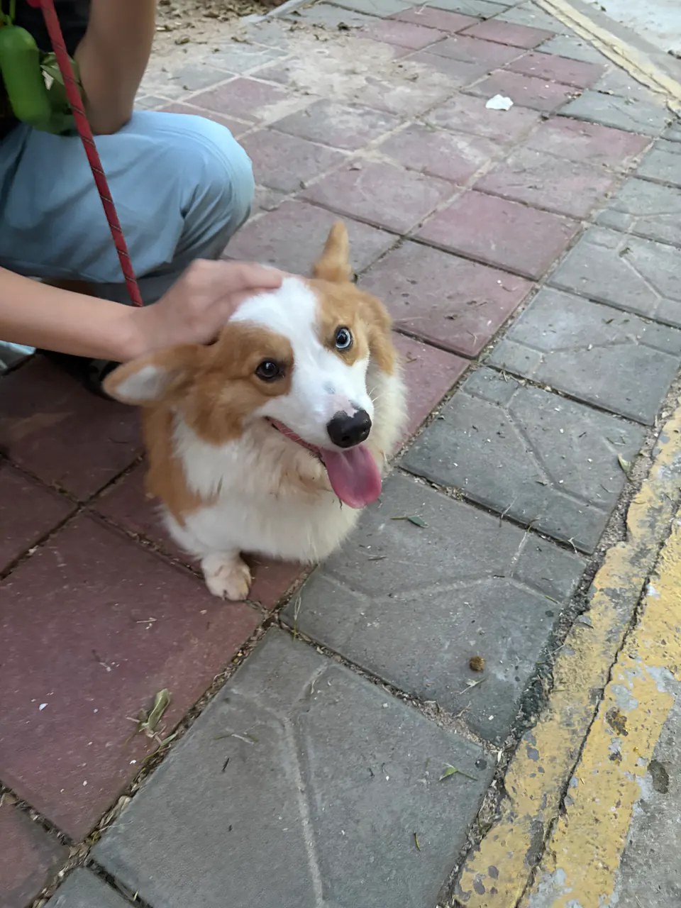
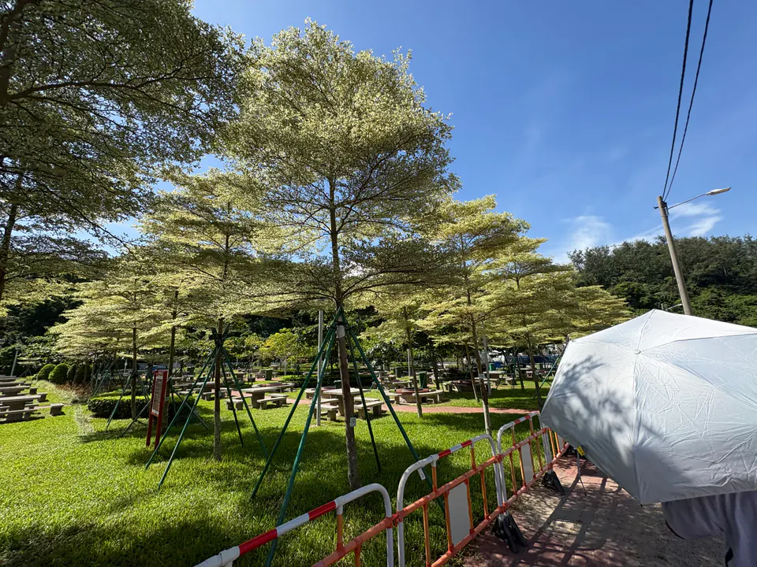

把想法，
做成作品。
01 / 控制 × 智能★ 700+ 星标 LLM–PID
TUNER.
让大模型走进真实控制系统。连接本地仿真与硬件，以可观察、可回退的方式探索自动调参。
Python / PID / LLM
LLM–PID
TUNER.
让大模型走进真实控制系统。连接本地仿真与硬件，以可观察、可回退的方式探索自动调参。
1. 项目定位
这是一个面向真实控制系统的 LLM 辅助 PID 调参工具。目标是把“靠经验反复试错”的调参过程，变成可观察、可复现、可回退的数据闭环。
2. 核心架构
- 双模式：支持本地仿真（simulator）与真实硬件（serial CSV）两条调参链路。
- 决策层：LLM 基于响应曲线质量给出下一轮 PID 建议。
- 安全层：参数边界、保守回退、最佳状态记忆，防止调参失控。
3. 工程亮点
支持 OpenAI 兼容 API（OpenAI / DeepSeek / Ollama / LM Studio），提供 system_id.py 初值建议和 benchmark.py 对比验证，并打包为可直接使用的 llm-pid-tuner.exe。
4. 结果与价值
项目已在 GitHub 收获 700+ Stars，在温控与运动控制场景中显著降低手动调参轮次，提升参数收敛效率和稳定性。
02 / 互联设备NEXUS
智能时钟
从一块 ESP32 开始，把语音、时间与智能连接到桌面。
ESP32-S3 / LVGL / WebSocket
NEXUS
智能时钟
从一块 ESP32 开始，把语音、时间与智能连接到桌面。
1. 项目背景
传统桌面时钟功能单一，而智能音箱往往受限于厂商生态。本项目旨在构建一个开源、可高度定制的桌面智能终端，作为连接物理世界与 AI 数字世界的桥梁。
2. 硬件架构
核心采用 ESP32-S3 双核芯片，主频 240MHz，具备强大的 AI 算力与 Wi-Fi/蓝牙通信能力。外设包括：
- 显示：1.28 英寸圆形 TFT LCD (GC9A01)，240x240 分辨率。
- 音频：I2S 全向麦克风 (INMP441) + MAX98357A 功放。
- 电源：TP4056 锂电池充电管理 + 稳压电路。
3. 软件与算法
基于 FreeRTOS 实时操作系统架构，分为 UI 任务、网络任务与音频处理任务。
- UI 框架：移植 LVGL 8.3，设计了高帧率动态表盘与交互界面。
- AI 通信：通过 WebSocket 协议与后端服务器建立长连接。后端集成 OpenAI/通义千问 API，将语音转文字 (STT) -> 大模型推理 -> 文字转语音 (TTS) 的全流程延迟压缩至 2秒以内。
4. 核心难点
在 ESP32 有限的 RAM (512KB) 中同时运行 LVGL 图形栈与 Wi-Fi 协议栈是最大挑战。通过优化 DMA 传输缓冲区与内存复用机制，成功解决了内存溢出问题，保持了系统稳定性。
03 / 物联网生态共享
无人机柜
连接小程序、云端与实体柜，让设备共享形成完整闭环。
MiniApp / Spring Boot / MQTT
共享
无人机柜
连接小程序、云端与实体柜，让设备共享形成完整闭环。
1. 项目概述
针对校园及景区场景下的无人机租赁需求，开发了一套完整的软硬件解决方案。用户通过微信小程序即可完成实名认证、扫码开柜、电池租赁及飞行记录查看。
2. 技术栈
- 前端：微信小程序原生开发，使用 Canvas 绘制飞行轨迹。
- 后端：Java Spring Boot 微服务架构，集成微信支付接口，使用 Redis 处理高并发下的柜门状态锁。
- 物联网：柜体主控通过 4G 模块接入 MQTT Broker，实现了毫秒级的开锁响应与心跳监测。
3. 核心功能
系统具备自动归还检测功能：通过柜内的 RFID 读写器与红外传感器，自动识别归还的无人机型号及配件完整性，并触发自动结算流程。
04 / 机器视觉精准激光除草机
在视觉识别与运动控制之间，探索精准农业的另一种可能。
YOLOv8 / OpenCV / Jetson
精准激光除草机
在视觉识别与运动控制之间，探索精准农业的另一种可能。
1. 研发背景
传统化学除草不仅污染土壤，还可能导致作物药害。物理激光除草作为一种绿色方案，对视觉识别的实时性与光束控制的精度提出了极高要求。
2. 视觉识别算法
采用 YOLOv8n 轻量级模型，针对 Jetson Nano 边缘设备进行了 TensorRT 加速。针对田间复杂光照，引入了 HSV 色彩空间过滤与直方图均衡化预处理，使杂草识别准确率提升至 95% 以上。
3. 伺服控制系统
设计了二自由度云台，通过坐标变换算法将图像像素坐标映射为物理空间角度。利用增量式 PID 算法控制舵机，快速响应目标移动，实现“指哪打哪”的动态追踪。
05 / 自主系统北斗水质监测船
从航向控制到远距离遥测，让嵌入式系统走进真实水域。
STM32 / BeiDou / LoRa
北斗水质监测船
从航向控制到远距离遥测，让嵌入式系统走进真实水域。
1. 系统构成
该无人船由船体结构、动力系统、主控单元及水质检测模块组成。主控芯片选用 STM32F407，因其丰富的外设接口（UART, I2C, ADC）足以应对多传感器数据并发。
2. 导航与控制
集成北斗/GPS 双模定位模块，结合电子罗盘获取航向角。通过计算目标航点与当前位置的偏差，利用 PID 算法调节双电机差速，实现高精度的路径跟踪与自主巡航。
3. 通信链路
针对野外无公网环境，设计了基于 LoRa (SX1278) 的私有通信协议。实现了 433MHz 频段下的数据透传，有效传输距离覆盖半径 5km，确保岸基上位机能实时接收 pH、浑浊度等水质数据。
06 / 生成式文化黎族文化 AIGC
将传统纹样转化为生成式表达，探索技术与文化的交点。
Stable Diffusion / LoRA
黎族文化 AIGC
将传统纹样转化为生成式表达，探索技术与文化的交点。
1. 项目意义
黎族传统纺染织绣技艺是世界级非物质文化遗产，但面临纹样数字化程度低、创新应用少的困境。本项目利用 AIGC 技术为传统文化注入数字生命力。
2. 模型训练
实地采集并清洗了 2000+ 张高质量黎族纹样图片，进行人工打标（Captioning）。基于 Stable Diffusion 1.5 基底模型，训练了专属的 LoRA (Low-Rank Adaptation) 模型。该模型能够精准理解“大力神纹”、“甘工鸟”等特定文化符号。
3. 落地应用
搭建了 Web 端生成工具，设计师只需输入简单的提示词，即可生成融合黎族元素的现代服饰设计草图，大幅降低了文创设计的门槛。
07 / 回到底层51 单片机电子琴
中断、时序、频率。从寄存器出发，让代码发出声音。
C51 / PWM / Hardware
51 单片机电子琴
中断、时序、频率。从寄存器出发，让代码发出声音。
1. 开发理念
在这个高级语言横行的时代，通过纯 C 语言操作寄存器，回归计算机科学的底层逻辑。这是一个关于中断、时序与频率的极客实验。
2. 核心实现
- 音调生成：利用定时器 T0 产生不同频率的中断，翻转 I/O 口电平输出方波，驱动无源蜂鸣器。频率计算基于十二平均律标准音高。
- 按键扫描：设计了非阻塞式的 4x4 矩阵键盘扫描算法，配合状态机去抖动，即使在快速连弹下也能准确识别按键。
- 存储回放：利用单片机内部 EEPROM 实现了简易的乐曲录制与掉电保存功能。
08 / 数字实验场你正在浏览的作品
一个持续生长的数字空间，收集工程、影像与新的想法。
HTML / JavaScript / Motion
你正在浏览的作品
一个持续生长的数字空间，收集工程、影像与新的想法。
1. 项目定位
这是我独立开发并长期维护的个人网站开源项目，既是个人品牌展示窗口，也是项目归档、内容输出与视觉实验的统一载体。
2. 设计与工程
整体采用 原生 HTML/CSS/JavaScript 构建，结合 TailwindCSS、GSAP 与 Lenis 实现轻量化页面结构、流畅滚动体验与赛博终端风格视觉语言，在保持高自由度的同时兼顾可维护性。
3. 开源定位
我将主页、项目案例、摄影内容与交互式模块整合为统一的信息架构，让它不仅是“展示页”，更是一个持续演化的公开作品集系统。
4. 访问入口
在探索中，
留下坐标。
2024第十九届全国大学生智能车竞赛摄像头组 · 华南赛区一等奖
作为算法负责人，我设计了基于动态阈值的赛道边缘提取算法（大津法改进版），并实现了逆透视变换（IPM）以消除图像畸变。极大地提高了赛车在光照剧烈变化环境下的鲁棒性。
2025第二十届全国大学生智能车竞赛电磁组 · 华南赛区三等奖
负责电磁信号采集电路的设计与 PCB 绘制。采用了多级运放放大微弱的电磁感应信号，并通过软件滤波算法有效滤除了电机干扰噪声。
2025睿抗机器人开发者大赛魔力元宝 · 海南赛区二等奖
在复杂地形越野项目中，我主要负责机器人底盘的运动学解算与姿态控制算法。通过引入卡尔曼滤波融合 IMU 数据，显著提升了机器人在高速行驶中的稳定性。
2024睿抗机器人开发者大赛魔力元宝 · 海南赛区三等奖
负责视觉抓取模块的调试。利用 OpenCV 进行色块识别与定位，配合机械臂逆运动学解算，完成了目标物体的自动分拣任务。
代码之外，
还有世界。


